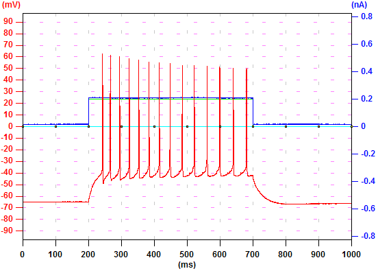

| To go to the "Analysis" tab, click the "Analysis" tab. | ||
| To find a record with specific settings, click "Load" button to load the setting file. Check "Setting Match Check" and click ">" by the "Record No" box. |
|
 |
| To display the records of one neuron one by one every 0.5 second, type "0.5" in the "sec" box and press "Enter". Click ">" and Ephic will increase the record number and display the data. Click "<" and Ephic will decrease the record number and display the data. If "Setting Match Check" is checked, Ephic will only display records that match the loaded settings. | ||
| In some situations, you will need to average traces in a subset of your data. For example, you might want to average traces before theta-burst stimulation and the last few traces at the end of an LTP experiment. To do so, you need to specify the first and the last record numbers. You can type the numbers in the "First Rec." and "Last Rec." boxes and press "Enter". This topic will be discussed in other tutorials. | ||
|
To average two traces, go to the first record and click "Add"
button. Then, go to the
second record and click "Add" button again. You will see "2" appear in the "NumRec" box,
indicating two traces have been saved to a buffer. To
display the averaged trace, check "show" and the averaged trace will be
displayed in green. To analyze the averaged trace, check "Active". This will be discussed in other tutorials. To clear the buffer, click "Clear". |